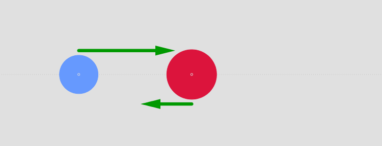
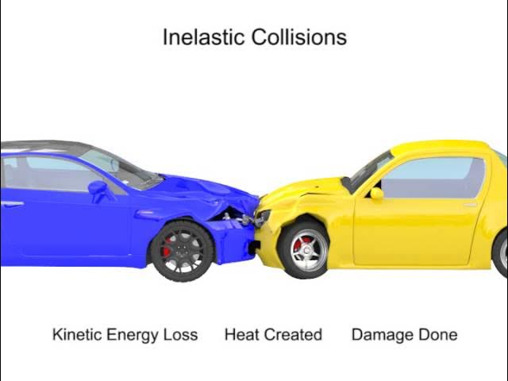
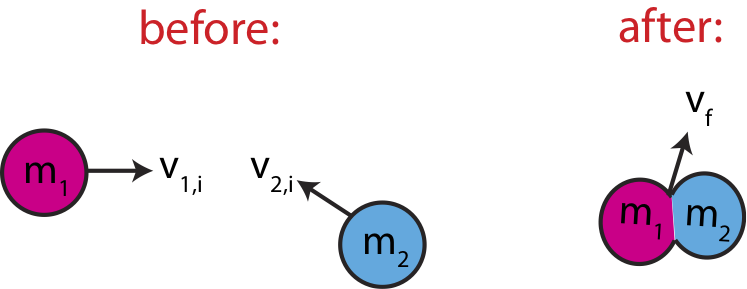

Collisions are categorized based on whether kinetic energy is conserved. All collisions conserve momentum, but only some conserve kinetic energy.
All collisions, regardless of type, conserve linear momentum when no external forces act on the system:
This is the fundamental starting point for any collision analysis.
In an elastic collision, both momentum and kinetic energy are conserved.
This type of collision is idealized. Real-world examples include collisions between gas particles or steel ball bearings. Velocities after an elastic collision can be calculated using both conservation laws or the relative velocity approach.
In inelastic collisions, momentum is conserved but kinetic energy is not. Some energy is converted to heat, sound, or deformation.
In most everyday collisions (cars, sports, etc.), the collision is inelastic because some kinetic energy is lost.
A perfectly inelastic collision is a special case of an inelastic collision in which the two objects stick together after colliding and move as one mass:
This type of collision maximizes the kinetic energy lost while still conserving momentum.
You CANNOT put this equation down on a FRQ without first deriving it. The deriation is as follows:
Assume:
Step 1: Apply conservation of momentum (total momentum before = total momentum after):
Step 2: Since they are stuck together, they have the same final velocity. Using algebra...
Step 3: Solve for \( v_f \):
This is the final velocity of the combined mass after collision. It is a mass-weighted average of the initial momenta.
Kinetic energy is not conserved in inelastic collisions (including perfectly inelastic). Some of the initial mechanical energy is transformed into thermal energy, sound, and internal deformation.
Perfectly inelastic collisions lose the most KE: Usually most of the Kinetic Energy is lost
Kinetic energy is conserved in elastic collisions, however. No energy is lost in the system
| Collision Type | Momentum Conserved? | Kinetic Energy Conserved? | Objects Stick Together? |
|---|---|---|---|
| Elastic | ✔ | ✔ | ✘ |
| Inelastic | ✔ | ✘ | ✘ |
| Perfectly Inelastic | ✔ | ✘ | ✔ |
All collisions conserve momentum, but only elastic collisions conserve kinetic energy. Perfectly inelastic collisions represent the extreme case of energy loss. Understanding the type of collision helps determine which quantities remain constant and how to solve problems involving multiple bodies.